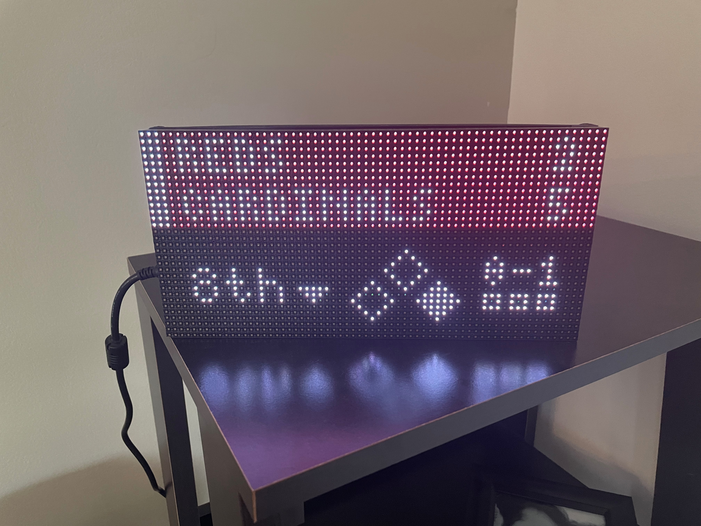
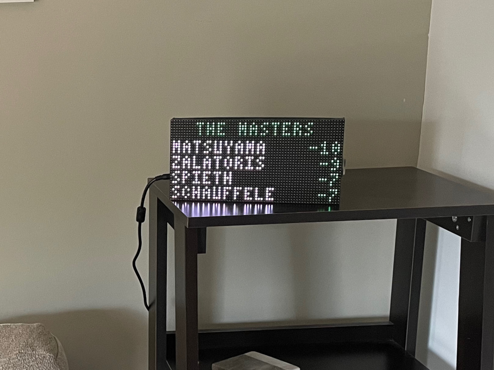
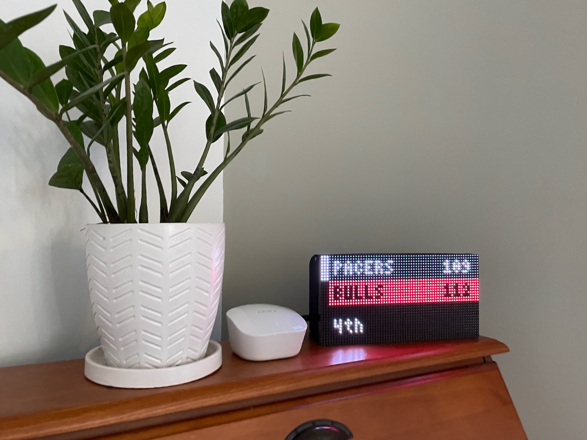
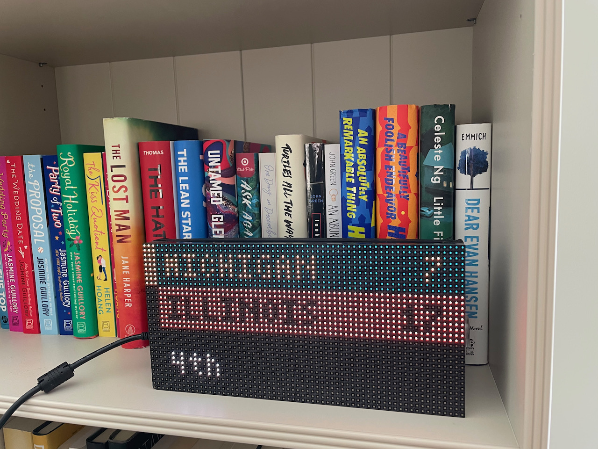
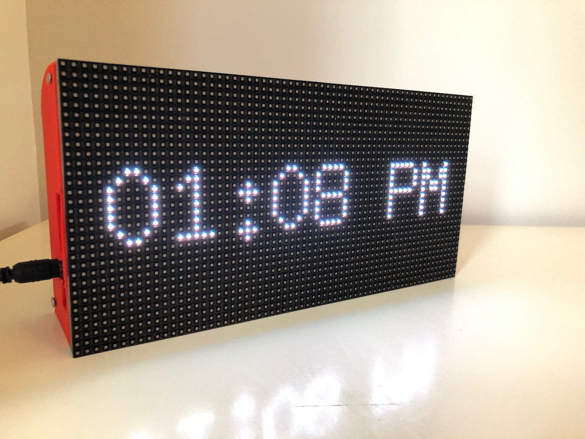
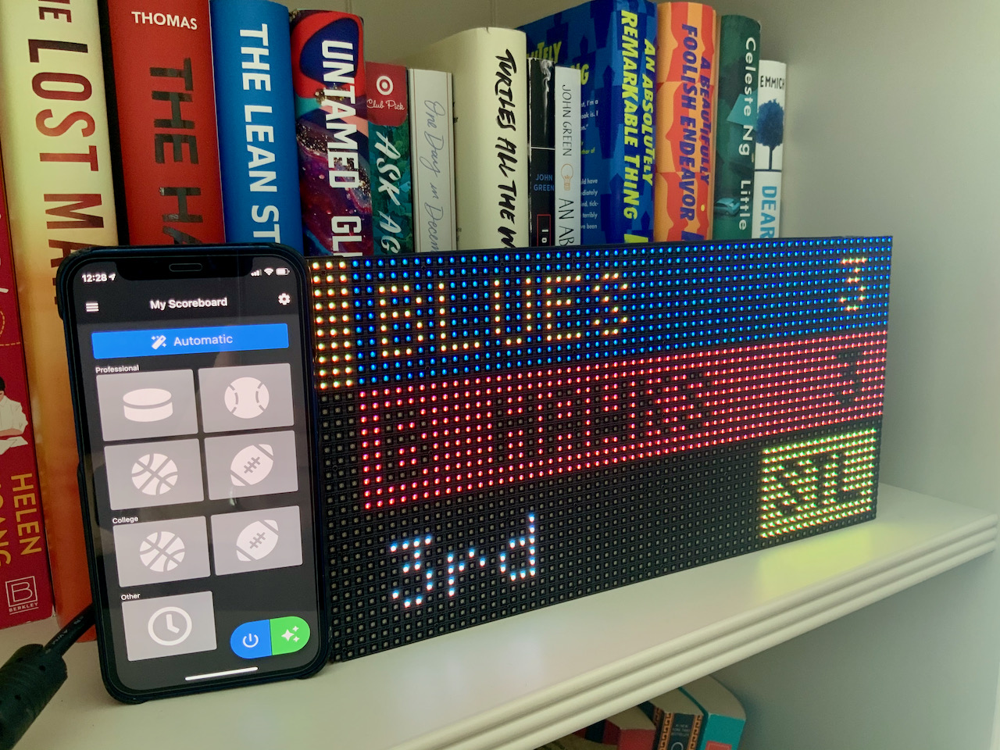
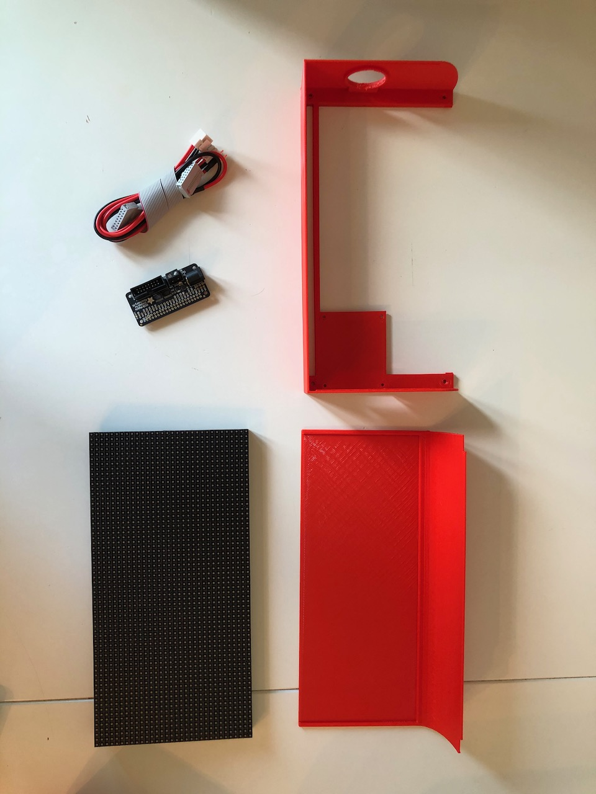

<!doctype html>
<html lang="en">

<head>
  <meta charset="utf-8">
  <meta name="viewport" content="width=device-width, initial-scale=1, shrink-to-fit=no">
  <meta name="description" content="Schmidt Scoreboard product page">
  <meta name="author" content="Mark Schmidt">
  <meta name="theme-color" content="#2196f3">
  <!-- <link rel="icon" href="../../../../favicon.ico"> -->

  <title>Schmidt Scoreboard</title>

  <!-- Bootstrap core CSS -->
  <link rel="stylesheet" href="https://maxcdn.bootstrapcdn.com/bootstrap/4.0.0/css/bootstrap.min.css"
    integrity="sha384-Gn5384xqQ1aoWXA+058RXPxPg6fy4IWvTNh0E263XmFcJlSAwiGgFAW/dAiS6JXm" crossorigin="anonymous">
  <!-- Custom styles for this template -->
  <link href="product.css" rel="stylesheet">
  <script src="https://code.jquery.com/jquery-3.2.1.min.js" crossorigin="anonymous"></script>
  <script src="https://cdnjs.cloudflare.com/ajax/libs/popper.js/1.12.9/umd/popper.min.js"
    integrity="sha384-ApNbgh9B+Y1QKtv3Rn7W3mgPxhU9K/ScQsAP7hUibX39j7fakFPskvXusvfa0b4Q"
    crossorigin="anonymous"></script>
  <script src="https://maxcdn.bootstrapcdn.com/bootstrap/4.0.0/js/bootstrap.min.js"
    integrity="sha384-JZR6Spejh4U02d8jOt6vLEHfe/JQGiRRSQQxSfFWpi1MquVdAyjUar5+76PVCmYl"
    crossorigin="anonymous"></script>
</head>

<body class="bg-light">

  <div id="nav-placeholder"></div>

  <script>
    $(function () {
      $("#nav-placeholder").load("nav.html", function () {
        $("#myNav").css("background-color", "#2196f3");
      });
    });
  </script>

  <div style="max-width: 950px; margin: auto">
    <div class="text-center">
      <div class="p-5 mx-auto mt-5">
        </img>
      </div>
      <div class="p-3 mx-auto">
        <a
          href='https://play.google.com/store/apps/details?id=com.markwschmidt.scoreboard&pcampaignid=pcampaignidMKT-Other-global-all-co-prtnr-py-PartBadge-Mar2515-1'></a>
        <a href="https://apps.apple.com/us/app/schmidt-scoreboard/id1502505701"></img></a>
      </div>

      <div class="  text-center  overflow-hidden">
        <div class="my-3 p-3">
          <h2 class="accent-class">Live Hockey Scores</h2>
          <p class="lead">Schmidt Scoreboard fetches live hockey scores, showing everything going on in the league
            all the
            time. Check when games start, track scores and powerplays. Schmidt Scoreboard can focus on your
            favorite team so that you never miss a moment.</p>
          </img>
        </div>
      </div>
      <div class="  text-center  overflow-hidden">
        <div class="my-3 p-3">
          <h2 class="accent-class">Live Baseball Scores</h2>
          <p class="lead">Switch to baseball mode to catch every game. See every ball, strike, and out across the
            entire
            league.</p>
          </img>
        </div>
      </div>
      <div class="  text-center  overflow-hidden">
        <div class="my-3 p-3">
          <h2 class="accent-class">Live Golf Standings</h2>
          <p class="lead">Keep an eye on the leaders for every tournament.<p>
          </img>
        </div>
      </div>
      <div class="  text-center  overflow-hidden">
        <div class="my-3 p-3">
          <h2 class="accent-class">Live Basketball Scores</h2>
          <p class="lead">Schmidt Scoreboard can display live scores from both professional and college basketball, so you never miss a minute of every game.
    </p>
          </img>
        </div>
      </div>

      <div class="  text-center  overflow-hidden">
        <div class="my-3 p-3">
          <h2 class="accent-class">Live Football Scores</h2>
          <p class="lead">For both college and professional football, Schmidt Scoreboard will keep you up to date on all the latest scores.
    </p>
          </img>
        </div>
      </div>

      <div class="  text-center  overflow-hidden">
        <div class="my-3 p-3">
          <h2 class="accent-class">Extras</h2>
          <p class="lead">Whether it's the offseason or a global pandemic and there are no games on, Scoreboard
            can show a
            digital clock or an image of your choice! Your scoreboard can automatically switch to the clock or power down when there are no important games playing.</p>
          </img>
        </div>
      </div>

      <div class="  text-center  overflow-hidden">
        <div class="my-3 p-3">
          <h2 class="accent-class">Scoreboard App</h2>
          <p class="lead">The Schmidt Scoreboard App for iOS and Android lets you set up a Scoreboard, select your
            favorite teams, change modes, or turn your Scoreboard off and on from anywhere in your house.</p>
          </img>
        </div>
      </div>
      <div class="  text-center  overflow-hidden">
        <div class="my-3 p-3">
          <h2 class="accent-class">Buy or Build Your Own</h2>
          <p class="lead">Due to parts shortages, I'm not actively building any Scoreboards. If you want to get on the waitlist to purchase a Scoreboard for $250, email me at <a href = "mailto: mark.schmidt@hey.com">mark.schmidt@hey.com</a></p>
          <p class="lead">If you'd prefer to Do It Yourself, great news: Schmidt Scoreboard is fully open-source under a GNU Public License. All the code is
            extensible and
            open, so you can make your Schmidt Scoreboard and customize it to do whatever you want. You can find <a href="https://github.com/SchmidtScoreboard/rust-scoreboard/blob/main/diy/ScoreboardSetup.md">more info here</a></p>
          </img>
        </div>
      </div>
    </div>
  <div class="px-5" id="Paragraphs">
    <h2 class="accent-class text-center">Background & History</h2>
    <p class="">For Valentine’s Day 2019, I used <a
        href="https://github.com/MLB-LED-Scoreboard/mlb-led-scoreboard">this</a> excellent open source guide to make an
      MLB
      Scoreboard for my St. Louis
      sports
      fanatic wife. While she loves the Cardinals, her one true love is the St. Louis Blues. So, when she asked if there
      was
      any way I could get her scoreboard to show hockey in addition to baseball, I gave it a shot. She loved it, and
      asked
      if this
      was something I could possibly make and sell to other people. What started as a quick weekend project turned into
      a year
      long learning experience pulling in all my software engineering skills.</p>
    <p>To turn this into a real product, I would have to make it mom and dad friendly—no need to solder anything, no
      need to
      configure things, update packages, or anything remotely technical. I needed to 3D print an enclosure, wire up a
      button,
      and write thousands of lines of code to support the onboarding process.
    </p>
    <p>
      This was a great learning opportunity for me—I learned how to use Flutter to make a cross platform controller app,
      how
      to use AWS and GraphQL to host a Scoreboard API, and put dozens of other skills to the test to make a final
      product that
      I’m very proud of.
    </p>
    <p>Big thank yous to:</p>
    <ul>
      <li>The <a href="https://github.com/MLB-LED-Scoreboard/mlb-led-scoreboard">MLB LED Scoreboard</a> project, which
        is the inspiration for this project</li>
      <li>Westmont Public Library for dealing with
        all of my 3D printing requests</li>
      <li>Richard Wendel, for helping me with Electrical Engineering 101</li>
      <li>Jack Schmidt, for designing logos/iconography and helping me make the app look much better</li>
      <li>Jamie Schmidt, for supporting me and encouraging me to bring this project to completion</li>
    </ul>
  </div>
  </div>
  
  <div id="footer-placeholder"></div>
  <script>
    $(function () {
      $("#footer-placeholder").load("footer.html");
    });
  </script>


</body>

</html>